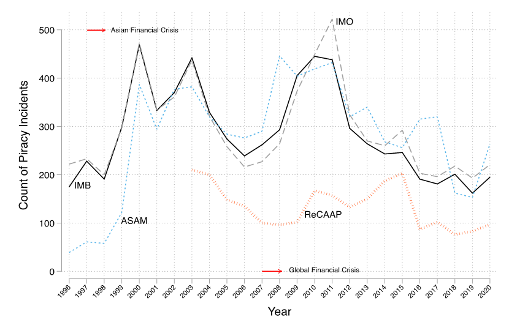

graph TD A["<br/> Potential IUUF perpetrators        <br/> #160;"]-->B["<br/> Constraint due to enforcement        <br/> Observe-Decline in illegal Fishing         <br/> #160;"] B-->C["Presence of opportunity      "] C-->D["Increase in piracy     "] linkStyle default stroke:white,stroke-width:4px,color:white;
Why are the Gulf of Guinea Waters so Dangerous? The Expected and Unintended Consequences of Conflict, Poverty, and Illegal Fishing
Piracy world-wide

Theory
Hypotheses
Piracy incidents more likely in areas
H1: where illegal fishing has declined
H2: with high commercial vessel traffic
H3: with high vessel traffic and a decline in illegal fishing
Research Design
Data: Gulf of Guinea (1990-2018)
Unit of analysis: Grid-cell year
DV: Presence of piracy in a grid-cell in a year? (Y-1/N-0 )
Independent variables:
- IUU fishing decline in each grid-cell (10% or more)
- Opportunity: Ship traffic
Traffic, June 2014


Research Design
Unit of analysis: Grid-cell year
Presence of piracy in a grid-cell in a year? (Y-1/N-0 )
Independent variables:
- IUU fishing decline in each grid-cell (10% or more)
- Opportunity: Ship traffic
Control variable:
- How close is the water from population centers – illegal fishers/pirates need market
- Ports in each grid-cells
Results
| (1) | (2) | (3) | |
|---|---|---|---|
| IUUF decline | 0.492** | 0.865*** | -0.312 |
| (0.192) | (0.243) | (1.039) | |
| Near nightlight dummy | 4.888*** | 3.310*** | 3.191*** |
| (0.474) | (0.794) | (0.786) | |
| Port count | 1.842*** | 1.406*** | 1.417*** |
| (0.266) | (0.351) | (0.354) | |
| High Traffic | 1.860*** | 1.527*** | |
| (0.454) | (0.477) | ||
| IUU X Traffic | 1.276 | ||
| (1.079) | |||
| Constant | -8.429*** | -8.182*** | -7.760*** |
| (0.455) | (0.762) | (0.817) | |
| Observation | 26377 | 4685 | 4685 |
Results
Robustness
Do we find evidence that increased security patrol in a given year causes the decline in IUU fishing (compared to last year), increasing piracy onset probabilities?
Mediation Analysis
Mediation Analysis Results onset
| (1) | (2) | |
|---|---|---|
| High patrol (lagged) | 0.463* | 0.337 |
| (0.246) | (0.237) | |
| IUUF decline | 0.781*** | |
| (0.226) | ||
| Hi Traffic | 1.622*** | 1.732*** |
| (0.444) | (0.446) | |
| Near nightlight dummy | 3.036*** | 3.213*** |
| (0.778) | (0.803) | |
| Port count | 1.351*** | 1.377*** |
| (0.344) | (0.352) | |
| Constant | -7.814*** | -8.165*** |
| (0.712) | (0.757) | |
| Observation | 4685 | 4685 |